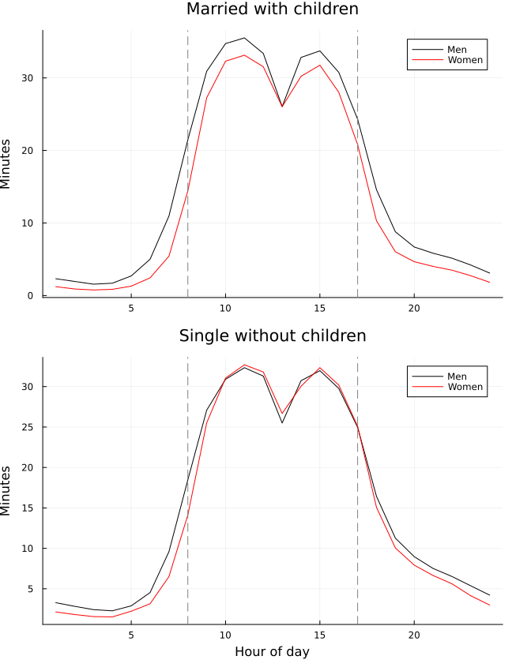

CCA CompEcon Replication Project
Replication of Coordinated Work Schedules and the Gender Wage Gap, by G. Cubas, C. Juhn and P. Silos (EJ, 2023)
![]()
This report was created as part of the assessment for the Computational Economics Course in the PhD program at Collegio Carlo Alberto taught by Florian Oswald.
0.1 Paper and Replication Package
This report attempts a partial replication of Cubas, Juhn and Silos, “Coordinated Work Schedules and the Gender Wage Gap”, using the julia computation language.
- Paper: https://doi.org/10.1093/ej/ueac086
- Replication package: https://doi.org/10.5281/zenodo.7336171
- Original software in the package: Stata and R
- Replication software used here: Julia
The replication targets are:
- Table 1, Table 2 and Figure 2, the main descriptive exhibits.
- Table 6, the main empirical wage-regression table.
- Table 5, the simple model results.
- Counterfactual 5.3.2, the quantitative-model counterfactual in which occupational coordination is set to the healthcare-support value.
At the current stage, Figure 2, Tables 1 and 2, Table 6, Table 5 and the quantitative counterfactual are implemented and run in Julia. Tables 1 and 2 use the generated Stata checkpoint 5_data_#5.dta, with the final regression and summary-statistic calculations performed in Julia. Table 6 uses the generated CPS/O*NET occupation checkpoint files, with the final weighted regressions and clustered standard errors computed in Julia.
0.2 High Level Description of Computational Problem
The paper studies how coordinated work schedules affect the gender wage gap. The empirical part constructs time-use measures of work concentration during regular hours, especially an occupation-level 8-to-5 ratio, and relates those measures to gender gaps in work, household care, and wages. The main empirical tasks are therefore data construction from ATUS/CPS/ACS/O*NET sources and weighted regressions with demographic controls and occupation-level coordination measures.
The model part solves workers’ time-allocation decisions across prime and non-prime hours. Workers choose labor in two time blocks, \(l_1\) and \(l_2\), while household care uses the remaining time. Effective labor in an occupation depends on total labor and a coordination penalty:
\[ \ell^* = l_1 + l_2 - (0.5 - l_1)^\alpha . \]
The worker utility problem has the form
\[ U = c^\theta h^{1-\theta}, \qquad h = \left(h_1^\xi + h_2^\xi\right)^{1/\xi}, \]
where \(c = w \ell^*\), \(h_1 = 0.5 - l_1\), and \(h_2 = 0.5 - l_2\). The Julia code solves these nonlinear choice problems using numerical optimization, then iterates on wages until the general-equilibrium labor-market clearing conditions are satisfied.
The simple model behind Table 5 is a two-occupation version of this problem. The quantitative counterfactual uses the estimated parameters from ces_param, solves the baseline equilibrium, then sets every occupation’s coordination parameter \(\alpha\) equal to the healthcare-support occupation’s value.
0.3 Computational Requirements
The original replication package does not provide a single complete machine-readable requirements file. Inspection of the package shows that the original empirical exhibits rely on Stata scripts and the model results rely on R scripts.
For this Julia replication, the main package dependencies are:
DataFrames.jlandCSV.jlfor data handling.XLSX.jlfor the Figure 2 checkpoint file.Optim.jlandNLsolve.jlfor nonlinear optimization and equation solving.Plots.jlfor Figure 2.StatFiles.jlfor the planned.dtacheckpoint route.
The generated Julia package exposes one main entry point:
using Pkg
Pkg.activate("CubasJuhnSilos")
using CubasJuhnSilos
CubasJuhnSilos.run_all()Unit tests can be run with:
julia --project=CubasJuhnSilos -e 'using Pkg; Pkg.test()'0.4 Computational Setup
The replication was run locally with the following setup:
- Operating system: macOS 26.4.1.
- CPU: Apple M1.
- Cores: 8.
- Memory: 8 GB.
- Julia: 1.12.4.
- Quarto: 1.9.37.
The code and outputs are organized as follows:
- Julia package:
CubasJuhnSilos/. - Original replication files:
replication-package/. - Generated tables:
output/tables/. - Generated figures:
output/figures/. - Notes on missing inputs:
output/logs/.
1 Replication Results
1.1 Figure 2
Figure 2 is replicated using the Stata-exported data checkpoint fig2_3.xlsx. This file contains the average minutes worked in each hour bin by gender and family status. The Julia code reads the spreadsheet and plots the two panels.

The replicated figure displays the same substantive pattern as the original: full-time workers concentrate work during regular daytime hours, with a larger male-female difference among married workers with children than among single workers without children.
1.2 Table 5
Table 5 is replicated by porting the simple two-occupation model from R to Julia. The table below reports the main outputs produced by the Julia implementation.
| Panel A: No Gender Differences | Occupation 1 | Occupation 2 |
|---|---|---|
| Share of Workers | 0.479 | 0.521 |
| Ratio 8to5 | 0.595 | 0.506 |
| Earnings | 0.416 | 0.383 |
| Raw labor by occupation | 0.823 | 0.803 |
| Effective labor by occupation | 0.796 | 0.802 |
| Panel B: Gender-Specific \(\nu\) | Occupation 1 | Occupation 2 |
|---|---|---|
| Gender Gap | 1.031 | 1.031 |
| Gender Gap, Occupation 2 | 1.005 | 1.005 |
| Share of Workers | 0.437 | 0.563 |
| Ratio 8to5 | 0.545 | 0.516 |
| Earnings | 0.459 | 0.356 |
| Raw labor by occupation | 0.910 | 0.730 |
| Effective labor by occupation | 0.898 | 0.726 |
| Share female | 0.000 | 0.888 |
| Panel C: Gender-Specific \(\nu\) and Tastes | Occupation 1 | Occupation 2 |
|---|---|---|
| Aggregate Gender Gap | 1.026 | 1.026 |
| Gender Gap by Occupation | 1.047 | 1.005 |
| Ratio 8to5 | 0.599 | 0.510 |
| Share Female | 0.500 | 0.500 |
| Percent Workers | 0.497 | 0.503 |
| Earnings | 0.405 | 0.396 |
| Raw Labor | 0.814 | 0.814 |
| Effective Labor | 0.796 | 0.802 |
The corresponding output files are:
output/tables/table5_panel_a_no_gender.csvoutput/tables/table5_panel_b_gender_diff_nu.csvoutput/tables/table5_panel_c_tastes.csvoutput/tables/table5_replicated.tex
1.3 Counterfactual 5.3.2
The quantitative counterfactual is implemented in Julia by solving the baseline model and then setting all occupation-specific coordination parameters \(\alpha\) equal to the healthcare-support occupation’s value. This corresponds to experiment == 1 in the original R script main_ge.R.
| Scenario | Aggregate gender gap (%) | Total log gap | Across log component | Within log component |
|---|---|---|---|---|
| Baseline | 9.626 | 0.092 | 0.019 | 0.073 |
| Same \(\alpha\) as healthcare support | 6.464 | 0.063 | 0.042 | 0.020 |
The counterfactual substantially lowers the within-occupation component of the gender wage gap in the model, from 0.073 log points to 0.020 log points. This is consistent with the mechanism emphasized in the paper: coordination requirements amplify within-occupation gender wage differences.
The corresponding output files are:
output/tables/counterfactual_5_3_2_summary.csvoutput/tables/counterfactual_5_3_2_baseline_regression.csvoutput/tables/counterfactual_5_3_2_counter_regression.csv
One caveat is important. The downloaded package does not include the original Quantitative_Analysis/data/*.txt calibration moment files used by the R script. The Julia implementation therefore uses the estimated parameters in model_files/ces_param and parses the labor shares from latex_tables/table8.tex. This is sufficient to solve the baseline and counterfactual equilibria, but it does not recompute the full original model-fit statistic.
1.4 Tables 1 and 2
Tables 1 and 2 are replicated using the generated Stata checkpoint 5_data_#5.dta. The Julia code follows the final Stata table script: it drops nonrespondents, restricts the sample to full-time married workers with children between ages 18 and 65, aggregates time-use bins to the respondent-day level, and estimates weighted least-squares regressions with ATUS final weights.
For speed, the Julia workflow first creates and uses a slim checkpoint, 5_data_#5_table12.dta, containing only the variables needed for these two tables. This does not change the sample or calculations; it only avoids repeatedly loading hundreds of unused variables from the full two-gigabyte checkpoint file.
1.4.1 Table 1: Work Hours
The coefficient reported is the female coefficient in regressions of total work hours. Negative values mean women report fewer work hours than comparable men in the selected sample.
| Model | Estimate | Standard error | Observations |
|---|---|---|---|
| 1 | -0.898 | 0.069 | 12,113 |
| 2 | -0.749 | 0.067 | 12,344 |
| 3 | -0.901 | 0.069 | 12,113 |
| 4 | -0.911 | 0.070 | 12,113 |
| 5 | -0.703 | 0.070 | 12,113 |
| 6 | -0.490 | 0.077 | 8,393 |
1.4.2 Table 2: Household Care Hours
The coefficient reported is the female coefficient in regressions of total household-care hours. Positive values mean women report more household-care hours than comparable men in the selected sample.
| Model | Estimate | Standard error | Observations |
|---|---|---|---|
| 1 | 0.436 | 0.028 | 12,113 |
| 2 | 0.264 | 0.033 | 12,344 |
| 3 | 0.436 | 0.028 | 12,113 |
| 4 | 0.349 | 0.027 | 12,113 |
| 5 | 0.319 | 0.027 | 12,113 |
| 6 | 0.266 | 0.033 | 8,393 |
The corresponding weighted means are:
| Statistic | Weighted mean |
|---|---|
| Weekday male work | 7.904 |
| Weekday female work | 7.006 |
| Weekend male work | 2.163 |
| Weekend female work | 1.414 |
| Weekday male household care | 0.821 |
| Weekday female household care | 1.257 |
| Weekend male household care | 1.002 |
| Weekend female household care | 1.267 |
The corresponding output files are:
output/tables/table1_from_dta.csvoutput/tables/table2_from_dta.csvoutput/tables/tables1_2_weighted_means_from_dta.csv
1.5 Table 6
Table 6 is replicated using the generated Stata checkpoint files 6_b_reg.dta, ONET_563b.dta, and bratio_563all.dta. The Julia code merges the CPS regression data with O*NET measures and the occupation-level 8-to-5 ratio, then estimates weighted log-weekly-earnings regressions with education, race, year, age-polynomial and log-hours controls. Standard errors are clustered by detailed occupation.
For speed, the Julia workflow uses a slim checkpoint, 6_b_reg_table6.dta, containing only the variables required for the final Table 6 regressions.
The key coefficient is femaleXbratio_563, the interaction between the female indicator and the occupation-level 8-to-5 work ratio.
| Sample | Model | Female | Female x ratio8to5 | Ratio8to5 | Observations |
|---|---|---|---|---|---|
| All | 1 | -0.218 | -0.049 | 0.113 | 263,245 |
| All | 2 | -0.254 | -0.046 | 0.064 | 263,245 |
| All | 3 | -0.244 | -0.044 | 0.063 | 263,179 |
| All | 4 | -0.212 | -0.028 | 0.069 | 256,672 |
| Single, no children | 1 | -0.135 | -0.022 | 0.102 | 73,536 |
| Single, no children | 2 | -0.169 | -0.025 | 0.062 | 73,536 |
| Single, no children | 3 | -0.165 | -0.024 | 0.061 | 73,516 |
| Single, no children | 4 | -0.132 | -0.010 | 0.062 | 71,577 |
| Married with children | 1 | -0.263 | -0.063 | 0.109 | 110,230 |
| Married with children | 2 | -0.298 | -0.060 | 0.065 | 110,230 |
| Married with children | 3 | -0.286 | -0.058 | 0.065 | 110,206 |
| Married with children | 4 | -0.255 | -0.040 | 0.072 | 107,626 |
The corresponding output file is:
output/tables/table6_from_dta.csv
The commands for the empirical checkpoint route are:
CubasJuhnSilos.run_table1_table2(source = :dta)
CubasJuhnSilos.run_table6(source = :dta)A raw-data port is also scaffolded:
CubasJuhnSilos.run_table1_table2(source = :raw)
CubasJuhnSilos.run_table6(source = :raw)The raw route still requires translating the full Stata data-construction chain. The checkpoint route is complete once the Stata intermediate files have been generated.
2 Conclusion
This replication currently reproduces Figure 2, Tables 1 and 2, Table 6, the model-based Table 5, and the quantitative counterfactual in Julia. The remaining limitation is that the empirical tables rely on Stata-generated checkpoint datasets rather than a full Julia port of the raw ATUS/CPS/O*NET data-construction pipeline.